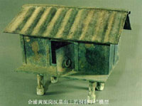

干栏是南方民族的楼居室，有悠久的历史。河姆渡的干栏遗址，距今近 7000年。干栏被认为是我国仅次于汉族宫殿建筑的古老建筑遗产。各民族的干栏有所不同，壮族的干栏壮语称为“栏干” (ranzgyan)，意为楼居住宅，其结构有民族的特色。
干栏建筑的特征是在地面上竖立木柱，然后在立柱上用木料构筑成屋架，顶上盖以茅草、树皮或瓦，铺板为楼，合板或糊泥为隔墙，人居楼层上，以防兽害和避潮湿；下层架空，用来圈养牲畜。三开间或五开间一栋。干栏建筑分为全楼居式、半楼居式、地居式等几类。无论哪种居式，大多为上、下层和楼阁三部分。其中楼阁起于上层，多用于存放粮食。有的还依居住层顺势伸延，建成望楼、排楼或晒排等等，结构合理、实用，适应南方炎热多雨环境的特点。

合浦黄泥岗汉墓出土的铜制干栏模型
目前壮族地区所发现的干栏建筑，年代最早、数量最多的是西汉至东汉时期的墓葬出土的干栏建筑模型（专为死者陪葬而制作的明器）。这些干栏模型主要发现于贵港、合浦、梧州等地的汉代墓葬中。
随着壮族社会生产力的提高和建筑技术的进步，其干栏建筑结构亦不断得到改进而日趋完善，并且对其他民族住居建筑的发展产生着重要的影响。直到现在，壮族地区的许多村寨仍保留着这种形态古老、风格独特的干栏建筑，而且因地区的不同，干栏的结构也有所不同。如桂北地区的高脚木结构干栏、桂中地区的“凹”形矮脚木结构干栏、桂南地区的硬山搁檩式干栏、桂西地区的勾栏式干栏。有的地方将传统干栏与现代建筑结合起来，以钢筋水泥建干栏，将下层改为居室，与汉族地居室结合起来，另起牛猪圈，“下畜牛豕”得到改造。
桂北壮族角楼
新式泥、瓦结构的“干栏”式住房
干栏群落
干栏群落是按家族、宗族相对聚居的需要安排的，其布局通常有串联式、并联式、平行式、辐射式等。串联式是从山麓到山腰上下依次排列若干个干栏，前后用带顶棚的飞桥连接起来，这往往是一大家几兄弟分别居住的。并联式为两排干栏，中留通道，两端有围墙及院门，形成相对封闭的长方形院落，这显然是氏族社会长屋的遗风。辐射式多见于较宽阔的山麓，干栏自下而上排成几行，自上向下展开辐射，中留通道，有的通道为石级。辐射式常与串联式相结合。在斜度较大的山麓，常常将屋基垒成梯田式，每一级横向排列若干干栏，平行伸展，有时上行屋基与下行屋顶平齐，饶有趣味。
与层层梯田遥相呼应的干栏群落
黑衣壮干栏
在广西西南边陲那坡县北部的大石山区，生活着一支世界上独一无二的民族——黑衣壮族。
由于居住在大石山区，交通不便，信息闭塞，黑衣壮族的先辈们根据当地多石多林多泥土的实际情况，因地制宜，创造性地建起了适宜大石山区群众居住的”干栏” 式结构民居群。这一独特而古老的建筑方式代代相传，一直沿袭至今。
为什么“干栏”式的房屋那么得到黑衣壮族同胞的喜爱呢?因为它冬暖夏凉，通风良好，适应南方多虫多雨、潮湿闷热的气候环境。它可为生活在石山区的黑衣壮族同胞驱风避寒，遮风挡雨，底层可为他们圈养家禽家畜，中层可作为他们生活和居住的地方，顶层可为他们储藏各种粮食杂物。
黑衣壮族的“干栏”式房子造价不高，但它造型美观，整体布局合理，就地取材，因陋就简，令人赞叹。
起源于古代先民的“巢居”建筑，现已演变成为三层建筑的干栏式结构的民居。干栏式的房屋支架全部用木头连架着，根根相扣，结构严谨，它们历经风雨，顽强地诉说和支撑着一个民族的历史。
南方气候多潮多雨，雨季时节雨水从瓦槽流下，水溅得高，要竖高石墩才能防止雨水溅到木柱子上，以延长房子的寿命。
一层至二层使用固定式的梯子，二层至三层使用活动式的梯子。梯子极大方便人们的日常生活，大部分的干栏都沿着山坡而筑，高高地建在石头垒起来的石墩上，一条小路沿坡而上通向家门，一户一条路。
房子的底层主要卷养禽家畜和储藏劳动生活中一些大件而笨重的物品，以及存放牲畜过冬的草料。
每间屋子之间都要隔开两米左右的距离，有一条小巷从中而过，方便左邻右舍行走，一旦发生火灾等事故时，又可作为防火道方便人们及时扑灭大火。
黑衣壮房屋除了正门用木材制作外，其他的三面都用泥土搅拌着水稻杆一起糊在墙壁的竹架或木架上，遮风挡雨。这种泥土粘性很强，一旦粘稳，几十年不脱落。干栏全都用瓦片盖顶，而瓦片则是采用当地粘性极强的红泥烧制而成，造价低廉却经久耐用。